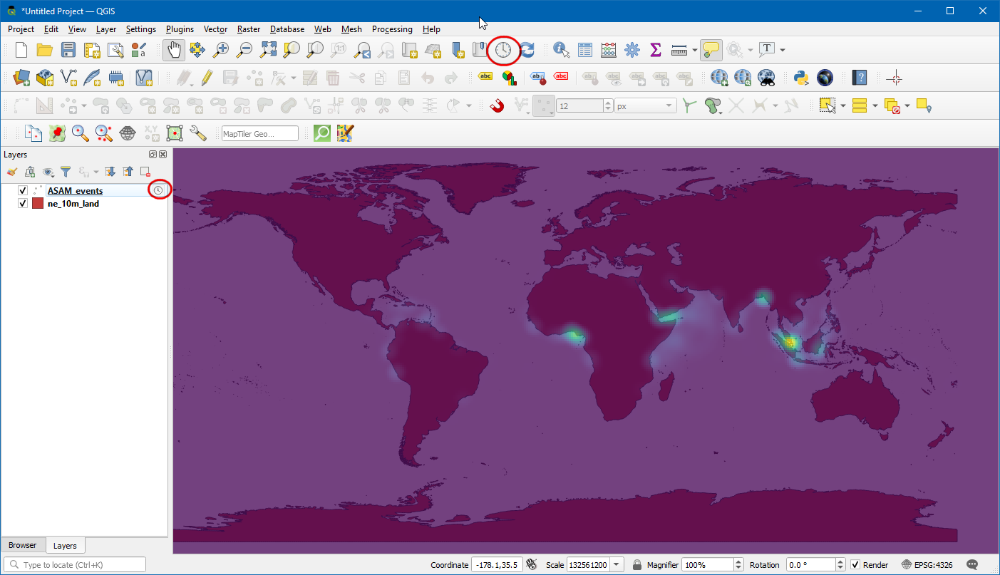

Ujaval Gandhi
Ujaval Gandhiمتحرک سازی داده های سری زمانی (QGIS3)¶
Time is an important component of many spatial datasets. Along with location information, time provides another dimension for analysis and visualization of data. If you are working with dataset that contains timestamps or have observations recorded at multiple time-steps, you can easily visualize it using the Temporal controler. Temporal controler allows you to view and export 'slices' of data between certain time intervals that can be combined into animations.
توجه
Temporal Controller از QGIS 3.14 به بعد در دسترس است. برای نسخه های قدیمی QGIS، افزونه مدیریت زمان عملکرد مشابهی را ارائه می دهد.
بررسی اجمالی کار¶
ما یک لایه نقطهای از حوادث دزدی دریایی را میگیریم، یک تجسم نقشه حرارتی ایجاد میکنیم و انیمیشنی از چگونگی تغییر نقاط داغ دزدی دریایی در طول ۲ دهه گذشته ایجاد میکنیم.
مهارت های دیگری که یاد خواهید گرفت¶
استفاده از رندر Heatmap برای تجسم سریع داده های نقطه متراکم
ایجاد و استفاده از پیش بینی های نقشه سفارشی
داده ها را دریافت کنید¶
National Geospatial-Intelligence Agency's Maritime Safety Information portal provides a shapefile of all incidencts of maritime piracy in the form on Anti-shipping Activity Messages. Download the Arc Shape file version of the database.
"زمین طبیعی <http://naturalearthdata.com>"_ چندین لایه برداری سراسری دارد. "بردارهای فیزیکی 10 متر - زمین <https://www.naturalearthdata.com/http//www.naturalearthdata.com/download/10m/physical/ne_10m_land.zip>"_ حاوی چند ضلعی های سرزمین را دانلود کنید.
برای راحتی کار، می توانید یک کپی از لایه های بالا را مستقیماً از زیر دانلود کنید:
منبع داده: [NGA_MSI] [NATURALEARTH]
روش¶
در پنل مرورگر QGIS، دایرکتوری را که داده های دانلود شده خود را در آن ذخیره کرده اید پیدا کنید. "ne_10m_land.zip" را گسترش دهید و لایه "ne_10m_land.shp" را انتخاب کنید. لایه را روی بوم بکشید. سپس، فایل «ASAM_shp.zip» را پیدا کنید. آن را گسترش دهید و لایه «asam_data_download/ASAM_events.shp» را انتخاب کنید و آن را روی بوم بکشید.

پس از بارگیری لایه، می توانید نقاط منفرد را که نشان دهنده حوادث مکان های دزدی دریایی هستند، مشاهده کنید. هزاران حادثه وجود دارد و تشخیص آن با دزدی دریایی بیشتر دشوار است. به جای نقاط منفرد، راه بهتر برای تجسم این داده ها از طریق نقشه حرارتی است. لایههای «ASAM_events» را انتخاب کنید و روی دکمه :guilabel: «باز کردن پانل استایل لایه» در پنل :guilabel:`Layers کلیک کنید. روی منوی کشویی "Single symbol" کلیک کنید.

در منوی کشویی انتخاب رندر، رندر «Heatmap» را انتخاب کنید. سپس، رمپ رنگ "Viridis" را از انتخابگر :guilabel:"Color ramp" انتخاب کنید.

مقدار Radius را روی
5.0تنظیم کنید. در پایین، بخش Rendering لایه را گسترش دهید و :guilabel:`Opacity را روی75.0%تنظیم کنید. این یک جلوه بصری زیبا از نقاط داغ با لایه زمین زیر می دهد.

اکنون بیایید این داده ها را متحرک کنیم تا نقشه سالانه حوادث دزدی دریایی را نشان دهیم. روی لایه "ASAM_event" کلیک راست کرده و "Properties" را انتخاب کنید.

در کادر محاورهای :guilabel:` ویژگیهای لایه، برگه :guilabel:`Temporal را انتخاب کرده و با کلیک کردن بر روی کادر انتخاب، آن را فعال کنید.

دادههای منبع حاوی ویژگی «dateofocc» است - که نشاندهنده تاریخی است که حادثه در آن رخ داده است. این فیلدی است که برای تعیین نقاطی که برای هر دوره زمانی رندر می شوند استفاده می شود. «فیلد واحد با داده/زمان» را در منوی کشویی :guilabel:«پیکربندی»، «dateofocc» به عنوان :guilabel:`Field انتخاب کنید.

دادههای منبع دارای ویژگی «dateofocc» است - که نشاندهنده تاریخی است که در آن رخ داده است. این فیلدی است که برای تعیین نقاطی که برای هر دوره زمانی رنگر می شوند استفاده می شود. «فیلد واحد با داده/زمان» را در منوی کشویی :guilabel:«پیکربندی»، «dateofocc» به عنوان :guilabel:`Field انتخاب کنید.

برای فعال کردن کنترلهای انیمیشن، روی "پیمایش زمانی متحرک" (نماد پخش) کلیک کنید. روی تنظیم به محدوده کامل (نماد بازخوانی) در کنار محدوده کلیک کنید تا به طور خودکار محدوده زمانی مطابق با مجموعه داده تنظیم شود.

اکنون آماده پیش نمایش انیمیشن هستید. :guilabel:"Step" را به عنوان "1 Year" تنظیم کنید سپس روی دکمه :guilabel:"Play" کلیک کنید تا انیمیشن شروع شود.

توجه
اگر انیمیشن خیلی سریع است، میتوانید با کلیک روی «تنظیمات زمانی» (نماد چرخدنده زرد) در گوشه سمت راست بالای پانل کنترلکننده زمانی، نرخ فریم را تنظیم کنید. کاهش نرخ فریم (فریم در ثانیه) باعث کاهش سرعت انیمیشن می شود.
همچنین نمایش برچسبی که بازه زمانی فعلی را روی نقشه نشان می دهد مفید خواهد بود. ما می توانیم این کار را با استفاده از دکوراسیون داخلی عنوان انجام دهیم. به بروید.

برای فعال کردن آن روی چک باکس کلیک کنید و روی دکمه "Insert an Expression" کلیک کنید و عبارت زیر را برای نمایش سال وارد کنید. در اینجا متغیر
@map_start_timeحاوی مهر زمانی برش زمانی فعلی نمایش داده شده است. بنابراین میتوانیم از آن زمان استفاده کنیم و آن را برای نمایش سال وقوع قالببندی کنیم. برای جزئیات بیشتر در مورد گزینههای قالببندی پشتیبانی شده مختلف برای مهر زمانی، به «مستندات QGIS <https://docs.qgis.org/testing/en/docs/user_manual/working_with_vector/functions_list.html#format-date>» مراجعه کنید.
format_date(@map_start_time, 'yyyy')
اندازه قلم را به عنوان
25انتخاب کنید، رنگ نوار پس زمینه را به عنوانسفیدتنظیم کنید و شفافیت را روی50%تنظیم کنید. در Placement "پایین راست" را انتخاب کنید. حالا Ok را بزنید.

پس از تنظیم پارامترها، سال مطابق تصویر نمایش داده می شود. برای صادر کردن آنها به عنوان تصاویر و تبدیل آنها به عنوان GIF، "Export Animation" (نماد ذخیره) را در پنجره کنترل زمانی انتخاب کنید.

برای انتخاب دایرکتوری که تصاویر در آن ذخیره می شوند، روی «...» :guilabel: «دایرکتوری خروجی» کلیک کنید.

در زیر :guilabel:` Extent` لایه :menuselection:`Calculate from Layer --> ne_10_land را انتخاب کنید. روی ذخیره کلیک کنید.

پس از اتمام صادرات، تصاویر PNG را برای هر سال (در مجموع 18 تصویر) در فهرست خروجی مشاهده خواهید کرد.

حالا بیایید یک GIF متحرک از این تصاویر بسازیم. گزینه های زیادی برای ایجاد انیمیشن از فریم های تصویر جداگانه وجود دارد. من «ezgif» <https://ezgif.com/maker>`_ را برای یک ابزار آسان و آنلاین دوست دارم. از سایت دیدن کنید و روی :guilabel:'Choose Files' کلیک کنید و همه فایل های .png را انتخاب کنید. پس از انتخاب، روی دکمه :guilabel:` آپلود و یک GIF بسازید!` کلیک کنید. پس از ایجاد، می توانید GIF را با استفاده از دکمه Save دانلود کنید.

If you want to give feedback or share your experience with this tutorial, please comment below. (requires GitHub account)